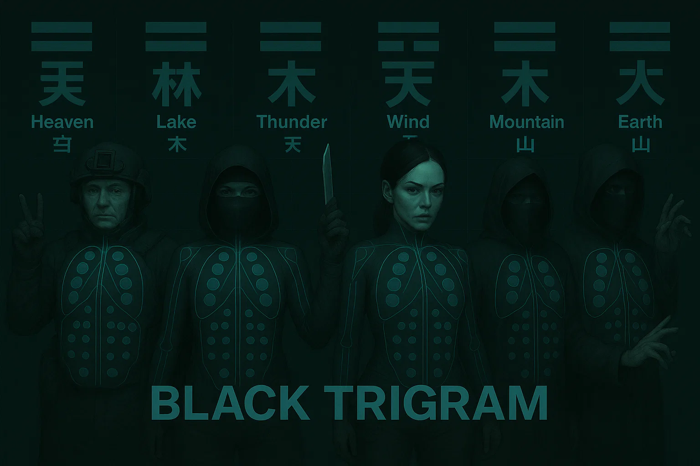

Black Trigram (흑괘) - Korean Martial Arts Combat Simulator API - v0.2.11
🥋 Black Trigram (흑괘)
어둠의 무예로 완벽한 일격을 추구하라
"Master the dark arts through the pursuit of the perfect strike" 🎮 Enter the Dojang



A realistic 2D precision combat game inspired by Korean martial arts philosophy and the I Ching
⚡ Combat Mastery
Black Trigram is a realistic combat simulator that teaches authentic Korean martial arts through precise anatomical targeting. Master traditional vital-point techniques via modern 2D combat mechanics across 5 distinct fighter archetypes.
🎯 Combat Disciplines
|
🎯 정격자 Jeonggyeokja Precision Striker Every strike targets anatomical weak points |
⚔️ 비수 Bisu Lethal Technique Decisive unarmed combat methods |
🥷 암살자 Amsalja Shadow Assassin Silent takedown techniques |
💀 급소격 Geupsogyeok Vital Point Strike 70 anatomical targets for incapacitation |
📸 Concept
🌟 Authentic Combat Features
🥋 Player Archetypes
Master combat through 5 distinct fighting philosophies:
| Archetype | Name | Combat Philosophy | Special Focus |
|---|---|---|---|
| 🏯 | 무사 (Musa) Traditional Warrior |
Honor through strength | Military discipline, overwhelming force |
| 🥷 | 암살자 (Amsalja) Shadow Assassin |
Efficiency through invisibility | Stealth approaches, instant takedowns |
| 💻 | 해커 (Hacker) Cyber Warrior |
Information as power | Environmental manipulation, tech-assisted strikes |
| 🕵️ | 정보요원 (Jeongbo Yowon) Intelligence Operative |
Knowledge through observation | Psychological manipulation, precise timing |
| ⚡ | 조직폭력배 (Jojik Pokryeokbae) Organized Crime |
Survival through ruthlessness | Dirty fighting, improvised weapons |
🎯 Anatomical Targeting System
Master 70 authentic vital points for combat effectiveness:
| Trigram | Name | Combat Focus | Combat Effects |
|---|---|---|---|
| ☰ | 건 (Geon) – Heaven | Bone-striking force | Fractures, structural damage |
| ☱ | 태 (Tae) – Lake | Joint manipulation | Dislocations, mobility loss |
| ☲ | 리 (Li) – Fire | Precise nerve strikes | Temporary paralysis, numbness |
| ☳ | 진 (Jin) – Thunder | Stunning techniques | Disorientation, knockouts |
| ☴ | 손 (Son) – Wind | Continuous pressure | Gradual incapacitation |
| ☵ | 감 (Gam) – Water | Blood flow restriction | Circulation disruption |
| ☶ | 간 (Gan) – Mountain | Defensive counters | Counter-attacks, blocks |
| ☷ | 곤 (Gon) – Earth | Ground techniques | Throws, takedowns |
💪 Realistic Body Mechanics
- 🩸 Authentic Trauma – Realistic injury visualization and blood
- 🦴 Bone Impact Audio – Genuine bone contact and fracture sounds
- 🫁 Breathing Disruption – Respiratory system targeting
- ⚖️ Balance System – Realistic stance and momentum physics
- 🧠 Consciousness States – Progressive awareness impairment
- 😵 Pain Response – Physiological pain affecting performance
🎯 Combat Specializations
- 🎯 Anatomical Precision – 70 target points for tactical advantage
- 🇰🇷 Traditional Korean Arts – Authentic techniques from 태권도, 합기도, 택견
- ⚫ Advanced Techniques – Professional combat methods from 5 distinct archetypes
- 🥋 Combat Application – Real martial arts effectiveness
🚀 Technical Excellence
Built for combat realism and authentic simulation:
🎯 Combat Components
- VitalPointTargeter – Interactive anatomical targeting system
- CombatTracker – Real-time damage and status monitoring
- TechniqueCalculator – Precise combat effectiveness calculations
- CombatAnalyzer – Post-match technique analysis
🎮 Combat Controls
⌨️ Combat Input System
- 🏃 Movement:
WASDorArrow Keys– Tactical positioning and footwork - ⚔️ Techniques:
1–8(Trigram-based combat techniques) - 🛡️ Guard:
Spacebar– Defensive positioning and blocks - 🎯 Vital Strike:
Mouse– Targeted vital-point attacks - 🔄 Archetype Switch:
Tab– Change between 5 fighter types
🩸 Combat Feedback
- 💥 Impact Effects: Bone contact sounds and visual trauma
- 🩸 Injury System: Realistic bleeding and damage progression
- 😵 Incapacitation: Visual indicators of combat effectiveness
- ⚖️ Balance: Physical stance and vulnerability windows
🎭 Training Modules
🎯 해부학 연구 (Anatomical Study)
- 📚 급소학습 (Vital Point Study) – 70 anatomical target points
- 🎯 정밀타격 (Precision Striking) – Accurate targeting techniques
- ⚫ 고급기법 (Advanced Techniques) – Professional combat methods
- 🥋 실전응용 (Practical Application) – Combat effectiveness training
⚔️ 무술 기법 (Martial Techniques)
- 🥋 기본기 (Fundamentals) – Basic striking and positioning
- 🔢 팔괘술 (Eight Trigram Arts) – Traditional Korean combat philosophy
- 🔗 연계기법 (Combination Techniques) – Flowing technique sequences
- 🎯 정밀술 (Precision Arts) – Exact targeting and timing
🥊 실전 훈련 (Combat Training)
- 👤 일대일 (One-on-One) – Single opponent combat simulation
- 🏢 환경전투 (Environmental Combat) – Using surroundings tactically
- 🧘 정신수양 (Mental Cultivation) – Psychological combat preparation
- 🏃 연속대전 (Continuous Combat) – Multiple opponent scenarios
🎭 원형 특화 (Archetype Mastery)
- 🏯 무사도 (Warrior's Way) – Traditional warrior discipline training
- 🥷 암영술 (Shadow Arts) – Stealth and assassination techniques
- 💻 사이버전 (Cyber Warfare) – Tech-enhanced combat methods
- 🕵️ 정보전 (Intelligence Warfare) – Psychological and strategic combat
- ⚡ 거리술 (Street Arts) – Underground survival combat
🔧 Development Features
🎯 Anatomical Data Integration
// Authentic vital point data with combat applications
interface VitalPoint {
name: { korean: string; english: string; technique: string };
location: AnatomicalPosition;
effectiveness: CombatEffectiveness;
difficulty: PrecisionRequired;
method: CombatTechnique[];
archetypeBonus: ArchetypeModifier[]; // Special bonuses for different fighter types
}
🩸 Combat Mechanics System
// Realistic body mechanics for authentic combat
interface CombatState {
health: number; // Physical condition remaining
consciousness: number; // Awareness and responsiveness
pain: number; // Pain levels affecting performance
balance: CombatStability; // Physical stability in combat
stamina: number; // Energy and endurance
technique: number; // Skill and precision level
archetype: PlayerArchetype; // Current fighter specialization
}
// Player archetype system
type PlayerArchetype = "musa" | "amsalja" | "hacker" | "jeongbo" | "jojik";
🚀 Quick Start
🌐 Enter the Dojang
🔧 Local Development
# Clone repository
git clone https://github.com/Hack23/blacktrigram.git
cd blacktrigram
# Install dependencies
npm install
# Start combat simulation
npm run dev
# Build for deployment
npm run build
# Run combat testing
npm run test
npm run test:combat
📚 Documentation & Further Reading
Game/frontend will be open source with commercial backend supporting multiplayer functionality, rankings and subscriptions to fund development and runtime of backend. Will enable progressions and persistent state of game.
🔗 Architecture & Design
- 📐 ARCHITECTURE.md High-level C4 models, container/component views, and system context.
- 📈 FUTURE_ARCHITECTURE.md Vision for upcoming architectural enhancements and PWA integration.
- API Docs Detailed API reference for all components, types, and functions in the application.
🔗 Combat & Mechanics
- 🥋 COMBAT_ARCHITECTURE.md In-depth battleflow, trigram integration, vital-point targeting, and damage pipeline.
- 🗺️ game-design.md Overall game mechanics, archetype breakdowns, and design decisions.
- 📊 game-status.md Current progress, feature roadmap, and milestone tracking.
🔗 Assets & Media
- 🖼️ ART_ASSETS.md Guidelines for sprite sheets, particle textures, color palettes, and UI icons.
- 🎵 AUDIO_ASSETS.md List of traditional Korean instrument loops, impact SFX, and mixing notes.
- 🎵 VIDEO_ASSETS.md Black Trigram: The Path of Shadows 🌑⚡🗡️ .Scene 1: Initiation Under Neon Skies 🌑🗡️🌆
🔒 CI/CD & Security Features
- 🔒 development.md The development implements comprehensive security measures:.
- 🛡️ Supply Chain Security - OSSF Scorecard analysis and dependency review
- 🔍 Static Analysis - CodeQL scanning for vulnerabilities
- 📦 Dependency Protection - Automated dependency vulnerability checks
- 🔐 Runner Hardening - All CI/CD runners are hardened with audit logging
- 📋 Security Policies - GitHub security advisories and vulnerability reporting
- 🏷️ Pinned Dependencies - All GitHub Actions pinned to specific SHA hashes
- 📄 SBOM Generation - Software Bill of Materials for transparency
- 🔏 Build Attestations - Cryptographic proof of build integrity
- 🏆 Artifact Verification - SLSA-compliant build provenance
- 🕷️ ZAP Security Scanning - OWASP ZAP dynamic application security testing
- ⚡ Lighthouse Performance - Automated performance and accessibility audits
🎯 Combat Philosophy
"어둠 속에서 완벽한 일격을 찾아라" > "In darkness, seek the perfect strike"
Each technique focuses on:
- 정확한 타격 (Precise Targeting) – Exact anatomical vulnerable points
- 최대 효과 (Maximum Effectiveness) – One-strike incapacitation
- 전투 심리 (Combat Psychology) – Mental preparation for combat
- 전통 지식 (Traditional Knowledge) – Authentic Korean martial arts
- 원형 특화 (Archetype Specialization) – Unique approach per fighter type
🏆 Combat Achievements
🎯 Combat Mastery
- 🎓 급소대가 (Vital Point Master) – Master all 70 vital-point targets
- 🩸 전투전문가 (Combat Expert) – Execute optimal combat techniques
- ⚫ 고수 (Advanced Practitioner) – Complete advanced technique training
- 🔪 완벽한 무사 (Perfect Warrior) – Achieve flawless combat records
🥋 Martial Proficiency
- 🎯 정밀타격사 (Precision Striker) – Perfect vital-point targeting accuracy
- ⚖️ 균형대사 (Balance Master) – Master all stance & footwork patterns
- 🧘 정신수양사 (Mental Cultivator) – Complete psychological combat training
- 🇰🇷 무도학자 (Martial Scholar) – Understand Korean martial arts philosophy
🎭 Archetype Mastery
- 🏯 무사완성 (Warrior Perfection) – Master traditional warrior discipline
- 🥷 그림자대사 (Shadow Master) – Perfect stealth & assassination arts
- 💻 사이버무사 (Cyber Warrior) – Tech-enhanced combat mastery
- 🕵️ 정보대가 (Intelligence Master) – Psychological warfare expertise
- ⚡ 거리왕 (Street King) – Underground combat supremacy